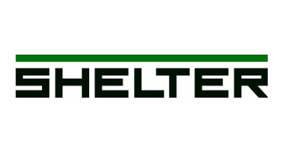
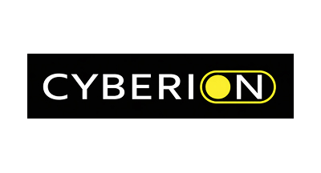
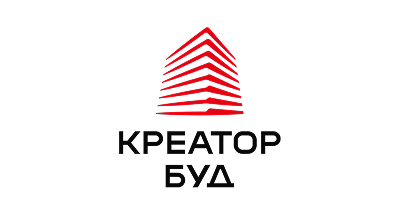
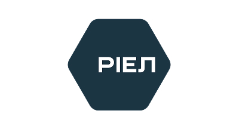

Енергонезалежний інтернет та побудова корпоративних мереж на власній оптичній магістралі.
Детальніше →Сузір'я цифрових послуг для бізнесу
Створюємо та обслуговуємо інфраструктуру зв'язку й безпеки з 2004 року: власна оптоволоконна мережа, системи безпеки та хмара — під одним договором і з єдиною відповідальністю за результат.
Понад 20 років будуємо цифрову інфраструктуру Львова
АСТРА (ТзОВ «АСТРА-ЛЬВІВ») будує інфраструктуру зв'язку та безпеки з 2004 року. За ці роки ми проклали власну магістральну оптоволоконну мережу у Львові та отримали повний контроль над якістю кожного каналу — від точки обміну трафіком до останнього метра до вашого об'єкта.
Із класичного інтернет-провайдера ми виросли у комплексного інфраструктурного партнера і сьогодні працюємо у трьох спеціалізованих напрямках: ASTRA ISP (енергонезалежний інтернет та корпоративні мережі), ASTRA INSTALL (системи безпеки, відеонагляд і контроль доступу) та ASTRA CLOUD (колокація, хмара й розміщення серверів у власному ЦОД). Це дозволяє закривати будь-яку телеком-потребу бізнесу чи житлового комплексу без залучення сторонніх підрядників.
Три напрямки під одним дахом
Ми об'єднали послуги у три спеціалізовані напрямки, щоб закрити будь-яку телеком-потребу вашого бізнесу чи ЖК, від каналу зв'язку до камер на периметрі та серверів у нашому ЦОД.
Проєктування та монтаж систем безпеки, відеонагляду, контролю доступу, мереж і мультимедіа.
Детальніше →Хмарна інфраструктура, розміщення серверів (колокація) та VPS/VDS із захистом від блекаутів.
Детальніше →Чому бізнес обирає АСТРА
Ми беремо технічні питання на себе, щоб ви зосередилися на своєму бізнесі.
Персональний підхід
Прямий зв'язок. Закріплений за вами менеджер знає специфіку кожної локації, координує технічні служби та швидко вирішує ваші питання.
Консолідація витрат
Усі ваші офіси, склади, магазини чи ЖК обслуговуються в межах одного договору. Єдиний рахунок, чітка дата оплати та спрощена бухгалтерія.
Комплексна відповідальність
Глибока експертиза та повний аудит мережі об'єкта. Ми відповідаємо за всю інфраструктуру й усуваємо проблеми на будь-якому рівні.
Команда, що будує та обслуговує
За кожним каналом і кожною камерою стоять власні інженери та оперативні виїзні бригади. Ми не передаємо роботи на субпідряд, тому відповідаємо за весь шлях, від проєктування до цілодобового супроводу.


Нам довіряють
Понад 50 ОСББ та десятки комерційних об'єктів: забудовники, житлові комплекси, ритейл- і HoReCa-мережі, логістичні компанії, заклади культури та освіти.










Обговорімо інфраструктуру вашого об'єкта
Залиште заявку — закріплений менеджер зв'яжеться з вами, підбере рішення під ваш масштаб і підготує комерційну пропозицію.